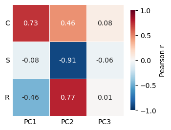
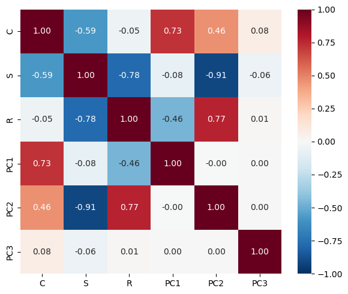

CSR PC123 Symbolic Regression
CSR PC123 Symbolic Regression#
import pandas as pd
# Adjust paths to wherever your CSVs live
trait_df = pd.read_csv("/net/scratch/swolf/GBIF/gbif_res3_try6_CS_wcvp_summary_stats_inkl_pca_mean_log10_notrim_misstree_group_with_CSR.csv")
trait_df.head()
| h3_res3 | group | PC1 | PC2 | PC3 | PC4 | PC5 | count | count_sp | mean_perc_na | ... | X.X95 | X.X138 | X.X1080 | X.X78 | X.X4 | X.X47 | LA_resolved | C | S | R | |
|---|---|---|---|---|---|---|---|---|---|---|---|---|---|---|---|---|---|---|---|---|---|
| 0 | 83001afffffffff | all | -10.334354 | 1.322861 | -1.725583 | 1.041462 | 2.158910 | 10 | 4 | 5.68 | ... | 85.452 | 2.183 | 3.140 | -0.547 | 0.333000 | 0.152 | 1.449 | 0.911566 | 0.000000 | 99.088434 |
| 1 | 83001afffffffff | native | -10.334354 | 1.322861 | -1.725583 | 1.041462 | 2.158910 | 10 | 4 | 5.68 | ... | 85.452 | 2.183 | 3.140 | -0.547 | 0.333000 | 0.152 | 1.449 | 0.911566 | 0.000000 | 99.088434 |
| 2 | 83001cfffffffff | all | -10.005360 | -0.238006 | 0.249138 | 2.913739 | 0.975752 | 1 | 1 | 16.22 | ... | 92.099 | 2.545 | 3.121 | -0.563 | 0.316611 | 0.175 | 1.518 | 2.943733 | 19.720529 | 77.335738 |
| 3 | 83001cfffffffff | native | -9.988809 | -0.301432 | 0.282222 | 2.913640 | 0.966630 | 1 | 1 | 16.22 | ... | 92.099 | 2.545 | 3.121 | -0.563 | 0.329122 | 0.175 | 1.518 | 2.943733 | 19.720529 | 77.335738 |
| 4 | 83001efffffffff | all | -10.690103 | -0.871359 | -0.945247 | -0.268565 | 1.311954 | 4 | 3 | 3.38 | ... | 88.269 | 2.311 | 3.671 | -1.933 | 0.409000 | 0.211 | 1.391 | 0.000000 | 47.807063 | 52.192937 |
5 rows × 51 columns
import pandas as pd
from scipy.stats import spearmanr
targets = ["C", "S", "R", "PC1", "PC2", "PC3"]
df = trait_df[targets].dropna() # your per-cell trait dataframe
corr_matrix = df.corr(method="pearson") # or "spearman" for Spearman correlation
print(corr_matrix.round(2))
C S R PC1 PC2 PC3
C 1.00 -0.59 -0.05 0.73 0.46 0.08
S -0.59 1.00 -0.78 -0.08 -0.91 -0.06
R -0.05 -0.78 1.00 -0.46 0.77 0.01
PC1 0.73 -0.08 -0.46 1.00 -0.00 0.00
PC2 0.46 -0.91 0.77 -0.00 1.00 0.00
PC3 0.08 -0.06 0.01 0.00 0.00 1.00
import seaborn as sns, matplotlib.pyplot as plt
CSR_COLS = ["C", "S", "R"]
PC_COLS = ["PC1", "PC2", "PC3"]
sub = corr_matrix.loc[CSR_COLS, PC_COLS] # rows C, S, R; columns PC1–3
fig, ax = plt.subplots(figsize=(3.6, 3))
sns.heatmap(sub, annot=True, fmt=".2f", cmap="RdBu_r", center=0, vmin=-1, vmax=1,
square=True, linewidths=0.5, linecolor="white",
cbar_kws={"label": "Pearson r", "shrink": 0.8}, ax=ax)
ax.set_xlabel("")
ax.set_ylabel("")
ax.tick_params(axis="both", length=0)
ax.set_yticklabels(ax.get_yticklabels(), rotation=0)
plt.tight_layout()
plt.savefig("../../Results/Figures/CSR_PCA_maps_correlation.pdf", format="pdf", bbox_inches="tight")

import seaborn as sns, matplotlib.pyplot as plt
fig, ax = plt.subplots(figsize=(6, 5))
sns.heatmap(corr_matrix, annot=True, fmt=".2f", cmap="RdBu_r",
center=0, vmin=-1, vmax=1, ax=ax)
#ax.set_title("Pearson r between spatial maps")
plt.tight_layout()
#save as pdf
plt.savefig("../../Results/Figures/CSR_PCA_maps_correlation.pdf", format="pdf", bbox_inches="tight")

pearson = df[targets].corr(method="pearson")
spearman = df[targets].corr(method="spearman")
# difference matrix — large values flag non-linearity
diff = (spearman - pearson).abs()
print(diff.round(2))
C S R PC1 PC2 PC3
C 0.00 0.00 0.03 0.01 0.02 0.03
S 0.00 0.00 0.05 0.00 0.02 0.03
R 0.03 0.05 0.00 0.02 0.01 0.05
PC1 0.01 0.00 0.02 0.00 0.02 0.05
PC2 0.02 0.02 0.01 0.02 0.00 0.06
PC3 0.03 0.03 0.05 0.05 0.06 0.00
import pandas as pd
import numpy as np
from pysr import PySRRegressor
# ── 1. Load your data ──────────────────────────────────────────────────────────
# Adjust paths to wherever your CSVs live
trait_df = pd.read_csv("/net/scratch/swolf/GBIF/gbif_res3_try6_CS_wcvp_summary_stats_inkl_pca_mean_log10_notrim_misstree_group_with_CSR.csv")
# Columns needed: PC1, PC2, PC3, and your CSR score columns
# Adjust column names to match yours
PC_COLS = ["PC1", "PC2", "PC3"]
CSR_COLS = ["C", "S", "R"] # or whatever your column names are
df = trait_df[PC_COLS + CSR_COLS].dropna()
X = df[PC_COLS].to_numpy() # shape (n_cells, 3)
# ── 2. Optional: CLR-transform CSR scores so they behave like real numbers ─────
# CSR scores are compositional (C+S+R = 100 or 1), so raw regression can
# violate the constraint. Isometric log-ratio (ILR) or centred log-ratio (CLR)
# gives unconstrained targets. Simplest option: just fit C and S, derive R = 1 - C - S.
# Here we fit all three independently for explorability, then you can enforce the constraint.
from scipy.special import logit
def clr(x, eps=1e-3):
"""Centred log-ratio transform. x rows should sum to 1."""
x = np.clip(x, eps, 1 - eps)
log_x = np.log(x)
return log_x - log_x.mean(axis=1, keepdims=True)
# Normalise to proportions (0–1) if your CSR scores are percentages
csr = df[CSR_COLS].to_numpy()
if csr.max() > 1.5:
csr = csr / 100.0
csr_clr = clr(csr) # shape (n_cells, 3), zero-sum per row
# ── 3. Fit one symbolic regression per CSR component ───────────────────────────
# (or use the CLR-transformed targets for unconstrained regression)
def fit_sr(y, name, complexity=20, iterations=40, reproducible=False):
model = PySRRegressor(
niterations=iterations,
maxsize=complexity,
binary_operators=["+", "-", "*", "/"],
unary_operators=["square", "cube", "sqrt", "abs", "log"],
populations=30,
population_size=50,
tournament_selection_n=10,
parsimony=0.002,
batching=False, # evaluates on mini-batches; much faster with many cells
#batch_size=1000,
output_directory="sr_outputs", # equations saved to sr_outputs/<run_id>/
run_id=f"csr_{name}",
random_state=42,
# identical results between runs need a serial search (slower)
deterministic=reproducible,
parallelism="serial" if reproducible else "multithreading",
verbosity=1,
)
model.fit(X, y, variable_names=PC_COLS)
print(f"\n=== {name} — Pareto front ===")
print(model.equations_[["complexity", "loss", "equation"]])
return model
# Fit on the raw scores (simple approach: just C and S, recover R later)
model_C = fit_sr(csr[:, 0], "C")
model_S = fit_sr(csr[:, 1], "S")
# Optionally fit R too for comparison, or derive: R = 1 - C_pred - S_pred
# ── 4. Pick your formula and evaluate ─────────────────────────────────────────
# PySR returns a Pareto front. Inspect it:
print(model_C.equations_) # DataFrame: complexity, loss, equation string, sympy_format
# Get predictions from the best (lowest-loss) equation:
C_pred = model_C.predict(X)
S_pred = model_S.predict(X)
R_pred = np.clip(1 - C_pred - S_pred, 0, 1) # enforce constraint
# Quick evaluation
from sklearn.metrics import r2_score
for name, y_true, y_pred in [("C", csr[:,0], C_pred),
("S", csr[:,1], S_pred),
("R", csr[:,2], R_pred)]:
print(f"R²({name}) = {r2_score(y_true, y_pred):.3f}")
# ── 5. Extract the symbolic formula ───────────────────────────────────────────
import sympy
print("C formula:", model_C.sympy())
print("S formula:", model_S.sympy())
/net/home/swolf/.conda/envs/traitmaps/lib/python3.8/site-packages/pysr/sr.py:2811: UserWarning: Note: it looks like you are running in Jupyter. The progress bar will be turned off.
warnings.warn(
Compiling Julia backend...
/net/home/swolf/.conda/envs/traitmaps/lib/python3.8/site-packages/pysr/sr.py:1873: UserWarning: Note: Setting `random_state` without also setting `deterministic=True` and `parallelism='serial'` will result in non-deterministic searches.
warnings.warn(
[ Info: Started!
Expressions evaluated per second: 1.200e+04
Progress: 419 / 1200 total iterations (34.917%)
════════════════════════════════════════════════════════════════════════════════════════════════════
───────────────────────────────────────────────────────────────────────────────────────────────────
Complexity Loss Score Equation
1 1.114e-02 0.000e+00 y = 0.23622
5 5.261e-03 1.875e-01 y = (PC1 + 11.34) * 0.020815
6 5.260e-03 7.189e-05 y = abs(PC1 + 11.34) * 0.020815
7 2.925e-03 5.870e-01 y = ((PC1 + PC2) - -11.703) * 0.020185
8 2.903e-03 7.342e-03 y = abs((PC1 + (PC2 - -11.351)) * 0.020758)
10 2.764e-03 2.462e-02 y = square((((PC1 + PC2) * 0.01089) - -0.23882) * 1.9947)
13 2.756e-03 9.855e-04 y = sqrt(abs(abs(cube((-0.42304 - ((PC2 + PC1) * 0.02625))...
* 0.88448))))
15 2.755e-03 1.585e-04 y = sqrt(sqrt(abs(cube(square(abs((((PC1 + PC2) * 0.020514...
) - -0.33572) * 1.118))))))
───────────────────────────────────────────────────────────────────────────────────────────────────
════════════════════════════════════════════════════════════════════════════════════════════════════
Press 'q' and then <enter> to stop execution early.
[ Info: Final population:
[ Info: Results saved to:
───────────────────────────────────────────────────────────────────────────────────────────────────
Complexity Loss Score Equation
1 1.114e-02 0.000e+00 y = 0.23622
5 5.261e-03 1.875e-01 y = (PC1 + 11.34) * 0.020815
6 5.260e-03 7.189e-05 y = abs(PC1 + 11.34) * 0.020815
7 2.925e-03 5.870e-01 y = ((PC1 + PC2) - -11.703) * 0.020185
8 2.764e-03 5.639e-02 y = square(PC2 + (PC1 - -21.896)) * 0.00047443
10 2.755e-03 1.750e-03 y = cube(sqrt(abs(-0.37444 - ((PC2 + PC1) * 0.022932))))
12 2.753e-03 3.306e-04 y = sqrt(abs(cube(-0.3752 - ((PC2 + (PC1 * 1.0164)) * 0.02...
2756))))
14 2.713e-03 7.218e-03 y = sqrt(cube(abs((((PC3 * 0.24107) + (PC1 + PC2)) * 0.022...
932) - -0.37444)))
16 2.711e-03 4.018e-04 y = sqrt(cube(abs((-0.33572 - ((PC2 + (PC1 + (PC3 * 0.1902...
6))) * 0.020514)) * 1.118)))
18 2.711e-03 8.941e-08 y = square(sqrt(sqrt(cube(abs(((((PC1 + PC2) + (PC3 * 0.19...
026)) * 0.020514) - -0.33572) * 1.118)))))
19 2.711e-03 9.293e-05 y = cube(sqrt(abs(abs((-0.33572 - (((((PC3 + -0.15693) * 0...
.19026) + PC2) + PC1) * 0.020514)) * 1.118))))
───────────────────────────────────────────────────────────────────────────────────────────────────
=== C — Pareto front ===
complexity loss equation
0 1 0.011136 0.23622291
1 5 0.005261 (PC1 + 11.3404665) * 0.02081504
2 6 0.005260 abs(PC1 + 11.3404665) * 0.02081504
3 7 0.002925 ((PC1 + PC2) - -11.703075) * 0.020184694
4 8 0.002764 square(PC2 + (PC1 - -21.89615)) * 0.00047442853
5 10 0.002755 cube(sqrt(abs(-0.3744438 - ((PC2 + PC1) * 0.02...
6 12 0.002753 sqrt(abs(cube(-0.37520224 - ((PC2 + (PC1 * 1.0...
7 14 0.002713 sqrt(cube(abs((((PC3 * 0.24106945) + (PC1 + PC...
8 16 0.002711 sqrt(cube(abs((-0.3357236 - ((PC2 + (PC1 + (PC...
9 18 0.002711 square(sqrt(sqrt(cube(abs(((((PC1 + PC2) + (PC...
10 19 0.002711 cube(sqrt(abs(abs((-0.3357236 - (((((PC3 + -0....
/net/home/swolf/.conda/envs/traitmaps/lib/python3.8/site-packages/pysr/sr.py:2811: UserWarning: Note: it looks like you are running in Jupyter. The progress bar will be turned off.
warnings.warn(
/net/home/swolf/.conda/envs/traitmaps/lib/python3.8/site-packages/pysr/sr.py:1873: UserWarning: Note: Setting `random_state` without also setting `deterministic=True` and `parallelism='serial'` will result in non-deterministic searches.
warnings.warn(
- sr_outputs/csr_C/hall_of_fame.csv
Expressions evaluated per second: 2.390e+04
Progress: 694 / 1200 total iterations (57.833%)
════════════════════════════════════════════════════════════════════════════════════════════════════
───────────────────────────────────────────────────────────────────────────────────────────────────
Complexity Loss Score Equation
1 2.825e-02 0.000e+00 y = 0.51443
5 4.846e-03 4.407e-01 y = (PC2 * -0.059997) + 0.51483
6 4.817e-03 6.101e-03 y = abs((PC2 * -0.060241) + 0.51425)
9 4.673e-03 1.011e-02 y = ((PC2 - (-0.058744 * PC1)) * -0.058744) + 0.51371
10 4.648e-03 5.479e-03 y = abs(0.51256 + ((PC2 - (-0.05889 * PC1)) * -0.05889))
11 4.403e-03 5.396e-02 y = ((-0.058254 - (PC1 * -0.0017248)) * (PC2 - 1.1864)) + ...
0.44511
12 4.376e-03 6.299e-03 y = abs(((PC2 - 1.1864) * (-0.058254 - (PC1 * -0.0017248))...
) + 0.44511)
13 4.143e-03 5.469e-02 y = ((PC2 * -0.060611) + 0.52885) - ((PC1 - PC2) * (PC1 * ...
0.0010781))
14 4.009e-03 3.296e-02 y = ((PC2 * -0.062256) + 0.53514) + (square((PC2 - PC1) / ...
-0.62026) * -0.00038266)
15 3.924e-03 2.138e-02 y = abs(((PC2 * -0.062256) + 0.53514) + (square((PC2 - PC1...
) / -0.62026) * -0.00038266))
───────────────────────────────────────────────────────────────────────────────────────────────────
════════════════════════════════════════════════════════════════════════════════════════════════════
Press 'q' and then <enter> to stop execution early.
[ Info: Started!
[ Info: Final population:
───────────────────────────────────────────────────────────────────────────────────────────────────
Complexity Loss Score Equation
1 2.825e-02 0.000e+00 y = 0.51443
5 4.846e-03 4.407e-01 y = (PC2 * -0.059997) + 0.51483
6 4.817e-03 6.102e-03 y = abs((PC2 * -0.060263) + 0.51443)
8 4.669e-03 1.556e-02 y = 0.98427 - abs((PC2 * 0.062758) + 0.4704)
9 4.610e-03 1.281e-02 y = ((-0.058254 - (PC1 * -0.0012989)) * PC2) + 0.50581
10 4.469e-03 3.106e-02 y = ((PC2 * -0.061191) + 0.52853) - square(PC1 * 0.031767)
11 4.403e-03 1.478e-02 y = ((-0.058254 - (PC1 * -0.0017248)) * (PC2 - 1.1864)) + ...
0.44511
12 4.011e-03 9.323e-02 y = ((PC2 * -0.06123) - (square(PC2 - PC1) * 0.00086473)) ...
+ 0.53025
13 3.931e-03 2.033e-02 y = abs((square(PC2 - PC1) * 0.0010185) - ((PC2 * -0.06207...
7) + 0.53142))
15 3.924e-03 8.919e-04 y = abs(((PC2 * -0.062256) + 0.53514) + (square((PC2 - PC1...
) / -0.62026) * -0.00038266))
16 3.881e-03 1.097e-02 y = (square((PC2 - PC1) - 1.1116) * -0.0010063) + abs(abs(...
(PC2 * -0.066517) + 0.53398))
18 3.868e-03 1.731e-03 y = abs((square((0.53514 - (PC2 - PC1)) / 0.61637) * -0.00...
038266) + abs((PC2 * -0.062256) + 0.53514))
───────────────────────────────────────────────────────────────────────────────────────────────────
=== S — Pareto front ===
complexity loss equation
0 1 0.028250 0.514426
1 5 0.004846 (PC2 * -0.059997164) + 0.5148275
2 6 0.004817 abs((PC2 * -0.060262576) + 0.51443326)
3 8 0.004669 0.9842709 - abs((PC2 * 0.062757604) + 0.47040325)
4 9 0.004610 ((-0.05825376 - (PC1 * -0.001298862)) * PC2) +...
5 10 0.004469 ((PC2 * -0.06119058) + 0.52852744) - square(PC...
6 11 0.004403 ((-0.05825376 - (PC1 * -0.0017248424)) * (PC2 ...
7 12 0.004011 ((PC2 * -0.061229803) - (square(PC2 - PC1) * 0...
8 13 0.003931 abs((square(PC2 - PC1) * 0.00101852) - ((PC2 *...
9 15 0.003924 abs(((PC2 * -0.062255908) + 0.5351401) + (squa...
10 16 0.003881 (square((PC2 - PC1) - 1.1116331) * -0.00100633...
11 18 0.003868 abs((square((0.5351401 - (PC2 - PC1)) / 0.6163...
complexity loss equation \
0 1 0.011136 0.23622291
1 5 0.005261 (PC1 + 11.3404665) * 0.02081504
2 6 0.005260 abs(PC1 + 11.3404665) * 0.02081504
3 7 0.002925 ((PC1 + PC2) - -11.703075) * 0.020184694
4 8 0.002764 square(PC2 + (PC1 - -21.89615)) * 0.00047442853
5 10 0.002755 cube(sqrt(abs(-0.3744438 - ((PC2 + PC1) * 0.02...
6 12 0.002753 sqrt(abs(cube(-0.37520224 - ((PC2 + (PC1 * 1.0...
7 14 0.002713 sqrt(cube(abs((((PC3 * 0.24106945) + (PC1 + PC...
8 16 0.002711 sqrt(cube(abs((-0.3357236 - ((PC2 + (PC1 + (PC...
9 18 0.002711 square(sqrt(sqrt(cube(abs(((((PC1 + PC2) + (PC...
10 19 0.002711 cube(sqrt(abs(abs((-0.3357236 - (((((PC3 + -0....
score sympy_format \
0 0.000000e+00 0.236222910000000
1 1.874685e-01 (PC1 + 11.3404665)*0.02081504
2 7.185451e-05 Abs(PC1 + 11.3404665)*0.02081504
3 5.870431e-01 (PC1 + PC2 - 1*(-11.703075))*0.020184694
4 5.639273e-02 (PC1 + PC2 - 1*(-21.89615))**2*0.00047442853
5 1.750117e-03 Abs(0.02293236*PC1 + 0.02293236*PC2 + 0.374443...
6 3.306452e-04 0.229825457732421*sqrt(Abs((0.0616424507565179...
7 7.217832e-03 Abs(0.02293236*PC1 + 0.02293236*PC2 + 0.005528...
8 4.018245e-04 Abs(0.0229355572214628*PC1 + 0.022935557221462...
9 9.221131e-08 Abs(0.0229355572214628*PC1 + 0.022935557221462...
10 9.287956e-05 Abs(0.0229355572214628*PC1 + 0.022935557221462...
lambda_format
0 PySRFunction(X=>0.236222910000000)
1 PySRFunction(X=>(PC1 + 11.3404665)*0.02081504)
2 PySRFunction(X=>Abs(PC1 + 11.3404665)*0.02081504)
3 PySRFunction(X=>(PC1 + PC2 - 1*(-11.703075))*0...
4 PySRFunction(X=>(PC1 + PC2 - 1*(-21.89615))**2...
5 PySRFunction(X=>Abs(0.02293236*PC1 + 0.0229323...
6 PySRFunction(X=>0.229825457732421*sqrt(Abs((0....
7 PySRFunction(X=>Abs(0.02293236*PC1 + 0.0229323...
8 PySRFunction(X=>Abs(0.0229355572214628*PC1 + 0...
9 PySRFunction(X=>Abs(0.0229355572214628*PC1 + 0...
10 PySRFunction(X=>Abs(0.0229355572214628*PC1 + 0...
[ Info: Results saved to:
R²(C) = 0.737
R²(S) = 0.828
R²(R) = 0.814
C formula: (PC1 + PC2 - 1*(-11.703075))*0.020184694
S formula: 0.5148275 + PC2*(-0.059997164)
- sr_outputs/csr_S/hall_of_fame.csv
def fit_sr(y, name, X_train, complexity=20, iterations=40, reproducible=False):
model = PySRRegressor(
niterations=iterations,
maxsize=complexity,
binary_operators=["+", "-", "*", "/"],
unary_operators=["square", "cube", "sqrt", "abs", "log"],
populations=30,
population_size=50,
tournament_selection_n=10,
parsimony=0.002,
batching=False, # ~10k cells: score on all training cells
output_directory="sr_outputs", # equations saved to sr_outputs/<run_id>/
run_id=f"csr_{name}",
random_state=42,
# identical results between runs need a serial search (slower)
deterministic=reproducible,
parallelism="serial" if reproducible else "multithreading",
verbosity=1,
)
model.fit(X_train, y, variable_names=PC_COLS)
return model
from sklearn.metrics import r2_score
# --- spatial hold-out using the folds from notebook 02 ------------------------
folds = pd.read_csv("~/Func_Neo_Phytes/Results/trait_env/spatial_folds.csv") # from xgboot SHAP analysis
# keep the H3 id when building df; "h3_index" is my guess at your column name, so adjust it
df = (trait_df[trait_df["group"] == "all"]
.rename(columns={"h3_res3": "h3_index"})
[["h3_index"] + PC_COLS + CSR_COLS].dropna()
.merge(folds[["h3_index", "fold"]], on="h3_index"))
assert df["h3_index"].is_unique
rng = np.random.default_rng(42)
fold_ids = df["fold"].unique()
test_folds = rng.choice(fold_ids, size=round(0.2 * len(fold_ids)), replace=False)
is_test = df["fold"].isin(test_folds).to_numpy()
print(f"train {np.sum(~is_test)} cells, test {np.sum(is_test)} cells ({len(test_folds)} of {len(fold_ids)} folds)")
X = df[PC_COLS].to_numpy()
csr = df[CSR_COLS].to_numpy()
if csr.max() > 1.5:
csr = csr / 100.0
def fit_and_score(j, name):
model = fit_sr(csr[~is_test, j], name, X_train=X[~is_test])
# score every equation on the Pareto front on the held-out folds
eq = model.equations_[["complexity", "equation"]].copy()
eq["R2_train"] = [r2_score(csr[~is_test, j], model.predict(X[~is_test], index=i)) for i in eq.index]
eq["R2_test"] = [r2_score(csr[is_test, j], model.predict(X[is_test], index=i)) for i in eq.index]
print(f"\n=== {name} ===")
print(eq.to_string(index=False))
return model, eq
model_C, eq_C = fit_and_score(0, "C")
model_S, eq_S = fit_and_score(1, "S")
train 8002 cells, test 1609 cells (8 of 41 folds)
/net/home/swolf/.conda/envs/traitmaps/lib/python3.8/site-packages/pysr/sr.py:2811: UserWarning: Note: it looks like you are running in Jupyter. The progress bar will be turned off.
warnings.warn(
/net/home/swolf/.conda/envs/traitmaps/lib/python3.8/site-packages/pysr/sr.py:1873: UserWarning: Note: Setting `random_state` without also setting `deterministic=True` and `parallelism='serial'` will result in non-deterministic searches.
warnings.warn(
[ Info: Started!
Expressions evaluated per second: 8.780e+04
Progress: 246 / 1200 total iterations (20.500%)
════════════════════════════════════════════════════════════════════════════════════════════════════
───────────────────────────────────────────────────────────────────────────────────────────────────
Complexity Loss Score Equation
1 9.492e-03 0.000e+00 y = 0.23103
5 4.598e-03 1.812e-01 y = (PC1 * 0.020308) - -0.23879
6 4.598e-03 3.958e-05 y = abs((PC1 * -0.020325) - 0.23878)
7 2.652e-03 5.501e-01 y = ((PC2 + PC1) * 0.01951) - -0.23264
8 2.522e-03 5.051e-02 y = square(((PC2 + PC1) * -0.021389) - 0.474)
9 2.522e-03 7.153e-07 y = abs(square(((PC2 + PC1) * -0.021394) - 0.47401))
11 2.522e-03 1.073e-06 y = square(abs((((PC1 + PC2) * -0.083579) - 1.8501) * 0.25...
618))
14 2.520e-03 1.798e-04 y = square((0.4893 - ((0.88491 - PC1) * 0.021582)) + ((PC2...
+ 0.19065) * 0.020936))
18 2.520e-03 3.404e-05 y = abs(square(((((PC2 / -1.0239) + (abs(PC2 * -0.036564) ...
+ 0.48604)) - PC1) * 0.021543) - 0.48634))
───────────────────────────────────────────────────────────────────────────────────────────────────
════════════════════════════════════════════════════════════════════════════════════════════════════
Press 'q' and then <enter> to stop execution early.
Expressions evaluated per second: 1.300e+05
Progress: 625 / 1200 total iterations (52.083%)
════════════════════════════════════════════════════════════════════════════════════════════════════
───────────────────────────────────────────────────────────────────────────────────────────────────
Complexity Loss Score Equation
1 9.492e-03 0.000e+00 y = 0.23103
5 4.598e-03 1.812e-01 y = (PC1 * 0.020308) - -0.23879
6 4.598e-03 3.958e-05 y = abs((PC1 * -0.020325) - 0.23878)
7 2.652e-03 5.501e-01 y = ((PC2 + PC1) * 0.01951) - -0.23264
8 2.522e-03 5.051e-02 y = square(((PC2 + PC1) * -0.021394) - 0.47401)
10 2.520e-03 2.709e-04 y = square((PC2 * 0.020967) + ((PC1 * 0.021568) - -0.47417...
))
12 2.493e-03 5.564e-03 y = square(-0.47433 - (((PC2 + PC1) + (PC3 * 0.175)) * 0.0...
21528))
14 2.491e-03 2.394e-04 y = square((((PC2 + (PC3 * 0.17494)) * -0.021037) + (PC1 *...
-0.021527)) - 0.47438)
16 2.491e-03 3.278e-07 y = square((((PC2 + 0.022214) + (PC3 * 0.17533)) * 0.02103...
4) + ((PC1 * 0.021526) - -0.47394))
18 2.491e-03 7.153e-07 y = square((((PC2 - ((PC3 * -0.041968) / 0.24076)) * 0.021...
03) - ((0.88479 - PC1) * 0.021568)) + 0.49349)
19 2.466e-03 1.040e-02 y = square((((PC1 + (PC3 * 0.17678)) * 0.021476) - -0.4722...
5) + ((square(PC3 * 0.21156) + PC2) * 0.021365))
───────────────────────────────────────────────────────────────────────────────────────────────────
════════════════════════════════════════════════════════════════════════════════════════════════════
Press 'q' and then <enter> to stop execution early.
Expressions evaluated per second: 1.390e+05
Progress: 964 / 1200 total iterations (80.333%)
════════════════════════════════════════════════════════════════════════════════════════════════════
───────────────────────────────────────────────────────────────────────────────────────────────────
Complexity Loss Score Equation
1 9.492e-03 0.000e+00 y = 0.23103
5 4.598e-03 1.812e-01 y = (PC1 * 0.020308) - -0.23879
6 4.598e-03 3.958e-05 y = abs((PC1 * -0.020325) - 0.23878)
7 2.652e-03 5.501e-01 y = ((PC2 + PC1) * 0.01951) - -0.23264
8 2.522e-03 5.052e-02 y = square(-0.47395 - ((PC1 + PC2) * 0.021407))
10 2.520e-03 2.698e-04 y = square(((PC2 * 0.020967) + (PC1 * 0.021568)) - -0.4741...
7)
12 2.493e-03 5.564e-03 y = square(-0.47433 - (((PC2 + PC1) + (PC3 * 0.175)) * 0.0...
21528))
14 2.491e-03 2.394e-04 y = square((((PC2 + (PC3 * 0.17494)) * -0.021037) + (PC1 *...
-0.021527)) - 0.47438)
16 2.491e-03 3.278e-07 y = square((((PC2 + 0.022214) + (PC3 * 0.17533)) * 0.02103...
4) + ((PC1 * 0.021526) - -0.47394))
17 2.491e-03 9.609e-05 y = abs(square((PC1 * 0.021485) + abs((PC2 * 0.020993) + s...
quare((PC3 * 0.0027109) - -0.68901))))
18 2.491e-03 1.878e-05 y = square(((PC1 + -0.014289) * 0.021485) + abs((PC2 * 0.0...
20993) + square((PC3 * 0.0027109) - -0.68901)))
19 2.465e-03 1.066e-02 y = square((((PC1 * 0.021574) + (PC3 * 0.0041042)) - -0.47...
143) + ((PC2 + square(PC3 * -0.22277)) * 0.021514))
───────────────────────────────────────────────────────────────────────────────────────────────────
════════════════════════════════════════════════════════════════════════════════════════════════════
Press 'q' and then <enter> to stop execution early.
───────────────────────────────────────────────────────────────────────────────────────────────────
Complexity Loss Score Equation
1 9.492e-03 0.000e+00 y = 0.23103
5 4.598e-03 1.812e-01 y = (PC1 * 0.020308) - -0.23879
6 4.598e-03 3.958e-05 y = abs((PC1 * -0.020325) - 0.23878)
7 2.652e-03 5.501e-01 y = ((PC2 + PC1) * 0.01951) - -0.23264
8 2.522e-03 5.052e-02 y = square(-0.47395 - ((PC1 + PC2) * 0.021407))
10 2.520e-03 2.698e-04 y = square(((PC2 * 0.020967) + (PC1 * 0.021568)) - -0.4741...
7)
12 2.492e-03 5.613e-03 y = square((((PC3 * 0.17375) + (PC2 + PC1)) * -0.021382) -...
0.47427)
13 2.492e-03 1.788e-07 y = abs(square((((PC1 + (PC3 * 0.175)) + PC2) * 0.021391) ...
- -0.47431))
14 2.491e-03 3.811e-04 y = square((PC1 * -0.021527) + (((PC2 + (PC3 * 0.17494)) *...
-0.021037) - 0.47438))
16 2.491e-03 1.252e-06 y = square((((PC3 * 0.0036889) - -0.47447) + ((PC2 - -0.00...
099787) * 0.021017)) + (PC1 * 0.021538))
17 2.469e-03 8.936e-03 y = square(((PC1 * 0.021514) - -0.47143) + ((PC2 + ((PC3 +...
abs(PC3)) * 0.19048)) * 0.021514))
19 2.465e-03 9.313e-04 y = square((PC1 * 0.021567) + (((PC3 * 0.0040616) - -0.471...
35) + ((PC2 + (square(PC3) * 0.052273)) * 0.021504)))
20 2.465e-03 1.216e-05 y = square(abs((PC1 * 0.021609) + (((((square(PC3) * 0.052...
271) + PC2) * 0.021535) + (PC3 * 0.0040669)) - -0.47132)))
───────────────────────────────────────────────────────────────────────────────────────────────────
=== C ===
complexity equation R2_train R2_test
1 0.23103152 -5.346743e-10 -0.046029
5 (PC1 * 0.020307623) - -0.2387881 5.155622e-01 0.575995
6 abs((PC1 * -0.020325286) - 0.23878393) 5.155814e-01 0.576084
7 ((PC2 + PC1) * 0.019510185) - -0.23263955 7.205496e-01 0.815075
8 square(-0.4739529 - ((PC1 + PC2) * 0.021407258)) 7.343157e-01 0.839845
10 square(((PC2 * 0.020966899) + (PC1 * 0.021567665)) - -0.47416818) 7.344590e-01 0.839823
12 square((((PC3 * 0.17375487) + (PC2 + PC1)) * -0.021382196) - 0.4742652) 7.374233e-01 0.845551
13 abs(square((((PC1 + (PC3 * 0.1749975)) + PC2) * 0.021391127) - -0.47431114)) 7.374233e-01 0.845598
14 square((PC1 * -0.021526858) + (((PC2 + (PC3 * 0.17494415)) * -0.02103715) - 0.47437856)) 7.375233e-01 0.845613
16 square((((PC3 * 0.0036888856) - -0.47446913) + ((PC2 - -0.000997868) * 0.021017166)) + (PC1 * 0.021538084)) 7.375240e-01 0.845646
17 square(((PC1 * 0.021514213) - -0.47142738) + ((PC2 + ((PC3 + abs(PC3)) * 0.1904821)) * 0.021514213)) 7.398590e-01 0.846195
19 square((PC1 * 0.021567455) + (((PC3 * 0.0040615695) - -0.47134656) + ((PC2 + (square(PC3) * 0.05227348)) * 0.021504007))) 7.403431e-01 0.843639
20 square(abs((PC1 * 0.021609208) + (((((square(PC3) * 0.052271154) + PC2) * 0.021534616) + (PC3 * 0.004066898)) - -0.4713207))) 7.403462e-01 0.843652
[ Info: Final population:
[ Info: Results saved to:
/net/home/swolf/.conda/envs/traitmaps/lib/python3.8/site-packages/pysr/sr.py:2811: UserWarning: Note: it looks like you are running in Jupyter. The progress bar will be turned off.
warnings.warn(
/net/home/swolf/.conda/envs/traitmaps/lib/python3.8/site-packages/pysr/sr.py:1873: UserWarning: Note: Setting `random_state` without also setting `deterministic=True` and `parallelism='serial'` will result in non-deterministic searches.
warnings.warn(
- sr_outputs/csr_C/hall_of_fame.csv
Expressions evaluated per second: 1.640e+05
Progress: 367 / 1200 total iterations (30.583%)
════════════════════════════════════════════════════════════════════════════════════════════════════
───────────────────────────────────────────────────────────────────────────────────────────────────
Complexity Loss Score Equation
1 2.615e-02 0.000e+00 y = 0.49818
5 4.419e-03 4.445e-01 y = (PC2 * -0.060625) - -0.51634
6 4.386e-03 7.455e-03 y = abs((PC2 * -0.060871) - -0.51627)
8 4.384e-03 1.705e-04 y = abs((PC2 * -0.060918) - -0.53381) + -0.017561
9 4.309e-03 1.748e-02 y = (-0.060573 * (PC2 - (-0.052843 * PC1))) - -0.51174
10 4.160e-03 3.516e-02 y = ((PC2 * -0.062067) - -0.52704) - square(PC1 * 0.02921)
14 4.050e-03 6.697e-03 y = ((PC2 * -0.061808) - -0.52743) - square(((PC1 * 0.0106...
04) + 0.020688) * 2.5928)
15 4.003e-03 1.154e-02 y = ((PC2 * -0.061751) - -0.52423) - ((PC1 + PC3) * ((PC1 ...
+ 4.2123) * 0.00075928))
16 3.973e-03 7.559e-03 y = abs(((PC2 * (0.66486 - ((PC3 * 0.026843) + (PC1 * 0.02...
1542)))) * 0.090315) - 0.51604)
18 3.947e-03 3.285e-03 y = ((PC2 * -0.061754) - -0.52409) - square(PC1 * (((PC2 *...
-0.0093512) * (PC1 * -0.044147)) + -0.027689))
───────────────────────────────────────────────────────────────────────────────────────────────────
════════════════════════════════════════════════════════════════════════════════════════════════════
Press 'q' and then <enter> to stop execution early.
[ Info: Started!
Expressions evaluated per second: 1.570e+05
Progress: 754 / 1200 total iterations (62.833%)
════════════════════════════════════════════════════════════════════════════════════════════════════
───────────────────────────────────────────────────────────────────────────────────────────────────
Complexity Loss Score Equation
1 2.615e-02 0.000e+00 y = 0.49818
5 4.419e-03 4.445e-01 y = (PC2 * -0.060625) - -0.51634
6 4.386e-03 7.455e-03 y = abs((PC2 * -0.060871) - -0.51627)
8 4.384e-03 1.705e-04 y = abs((PC2 * -0.060918) - -0.53381) + -0.017561
9 4.297e-03 2.010e-02 y = (PC2 * -0.060573) - ((PC1 * 0.003201) - 0.5151)
10 4.160e-03 3.254e-02 y = ((PC2 * -0.061928) - -0.52704) - square(PC1 * 0.029128...
)
11 4.123e-03 8.875e-03 y = abs(((PC2 * -0.062217) - -0.52698) - square(PC1 * 0.02...
9491))
12 3.827e-03 7.435e-02 y = ((PC2 * -0.061459) - -0.53254) - (square(PC1 - PC2) * ...
0.0008834)
13 3.753e-03 1.967e-02 y = abs(((PC2 * -0.062551) - -0.53359) - square((PC2 - PC1...
) * 0.031185))
14 3.748e-03 1.234e-03 y = abs(square((PC2 - PC1) * 0.028582) - abs((PC2 * -0.063...
878) - -0.53226))
15 3.690e-03 1.577e-02 y = abs(((PC2 * -0.064291) - -0.53298) - square(((PC1 - PC...
2) + 1.3183) * 0.029771))
17 3.687e-03 4.150e-04 y = abs(((PC2 * -0.064194) - -0.53303) - square(((PC2 * -0...
.028087) + 0.039538) + (PC1 * 0.03051)))
18 3.648e-03 1.044e-02 y = abs(square((PC1 * 0.030353) + ((PC2 * -0.032781) + 0.0...
367)) - abs(-0.53394 - (PC2 * -0.065412)))
19 3.648e-03 1.073e-05 y = abs(abs((PC2 * -0.065302) - -0.53385) - square(abs(((P...
C2 * -0.032542) + 0.036701) + (PC1 * 0.030448))))
───────────────────────────────────────────────────────────────────────────────────────────────────
════════════════════════════════════════════════════════════════════════════════════════════════════
Press 'q' and then <enter> to stop execution early.
Expressions evaluated per second: 1.580e+05
Progress: 1108 / 1200 total iterations (92.333%)
════════════════════════════════════════════════════════════════════════════════════════════════════
───────────────────────────────────────────────────────────────────────────────────────────────────
Complexity Loss Score Equation
1 2.615e-02 0.000e+00 y = 0.49818
5 4.419e-03 4.445e-01 y = (PC2 * -0.060625) - -0.51634
6 4.386e-03 7.455e-03 y = abs((PC2 * -0.060871) - -0.51627)
8 4.384e-03 1.705e-04 y = abs((PC2 * -0.060918) - -0.53381) + -0.017561
9 4.297e-03 2.010e-02 y = (PC2 * -0.060573) - ((PC1 * 0.003201) - 0.5151)
10 4.160e-03 3.257e-02 y = ((PC2 * -0.061966) - -0.52713) - (square(PC1) * 0.0008...
6472)
11 4.123e-03 8.852e-03 y = abs(square(PC1 * 0.029439) - ((PC2 * -0.06222) - -0.52...
699))
12 3.827e-03 7.435e-02 y = ((PC2 * -0.061459) - -0.53254) - (square(PC1 - PC2) * ...
0.0008834)
13 3.753e-03 1.967e-02 y = abs(((PC2 * -0.062551) - -0.53359) - square((PC2 - PC1...
) * 0.031185))
14 3.735e-03 4.824e-03 y = abs(square((PC1 - PC2) * 0.029771) - abs(-0.53298 - (-...
0.064291 * PC2)))
15 3.690e-03 1.218e-02 y = abs(((PC2 * -0.064291) - -0.53298) - square(((PC1 - PC...
2) + 1.3183) * 0.029771))
16 3.650e-03 1.067e-02 y = abs(square(((PC1 - PC2) + 1.0302) * -0.031055) - abs((...
PC2 * 0.064914) - 0.5334))
17 3.639e-03 3.262e-03 y = abs(((PC2 * -0.06492) - -0.5312) - square((PC1 + ((1.6...
304 - PC2) + PC3)) * -0.026143))
───────────────────────────────────────────────────────────────────────────────────────────────────
════════════════════════════════════════════════════════════════════════════════════════════════════
Press 'q' and then <enter> to stop execution early.
───────────────────────────────────────────────────────────────────────────────────────────────────
Complexity Loss Score Equation
1 2.615e-02 0.000e+00 y = 0.49818
5 4.419e-03 4.445e-01 y = (PC2 * -0.060625) - -0.51634
6 4.386e-03 7.455e-03 y = abs((PC2 * -0.060871) - -0.51627)
8 4.384e-03 1.705e-04 y = abs((PC2 * -0.060918) - -0.53381) + -0.017561
9 4.265e-03 2.768e-02 y = abs(0.98064 - abs((PC2 * 0.062799) - -0.46242))
10 4.160e-03 2.499e-02 y = ((PC2 * -0.061966) - -0.52713) - (square(PC1) * 0.0008...
6472)
11 4.123e-03 8.852e-03 y = abs(square(PC1 * 0.029439) - ((PC2 * -0.06222) - -0.52...
699))
12 3.827e-03 7.435e-02 y = ((PC2 * -0.061459) - -0.53254) - (square(PC1 - PC2) * ...
0.0008834)
13 3.753e-03 1.967e-02 y = abs(((PC2 * -0.062551) - -0.53359) - square((PC2 - PC1...
) * 0.031185))
14 3.716e-03 9.950e-03 y = abs(square((PC2 - PC1) * 0.030897) - abs((PC2 * -0.062...
362) - -0.53264))
15 3.665e-03 1.368e-02 y = abs(-0.53298 - (PC2 * -0.064291)) - square((1.3183 + (...
PC1 - PC2)) * 0.029771)
16 3.650e-03 4.080e-03 y = abs(abs(-0.53347 - (PC2 * -0.064946)) - square(((PC2 -...
0.99576) - PC1) * -0.031641))
17 3.639e-03 3.225e-03 y = abs(((PC2 * -0.06492) - -0.5312) - square((PC1 + ((1.6...
304 - PC2) + PC3)) * -0.026143))
───────────────────────────────────────────────────────────────────────────────────────────────────
[ Info: Final population:
[ Info: Results saved to:
=== S ===
complexity equation R2_train R2_test
1 0.49817857 -3.738740e-10 -0.125229
5 (PC2 * -0.060624514) - -0.51634043 8.309953e-01 0.819747
6 abs((PC2 * -0.06087133) - -0.5162662) 8.322505e-01 0.820910
8 abs((PC2 * -0.060918096) - -0.53381264) + -0.017561218 8.323077e-01 0.820756
9 abs(0.9806374 - abs((PC2 * 0.062798545) - -0.46241564)) 8.368859e-01 0.839595
10 ((PC2 * -0.061965577) - -0.52713346) - (square(PC1) * 0.0008647204) 8.409113e-01 0.842045
11 abs(square(PC1 * 0.029438835) - ((PC2 * -0.06221954) - -0.5269861)) 8.423132e-01 0.843177
12 ((PC2 * -0.061459046) - -0.5325388) - (square(PC1 - PC2) * 0.00088339613) 8.536124e-01 0.873347
13 abs(((PC2 * -0.06255088) - -0.53358525) - square((PC2 - PC1) * 0.031184882)) 8.564631e-01 0.878513
14 abs(square((PC2 - PC1) * 0.030897247) - abs((PC2 * -0.062361963) - -0.53263533)) 8.578842e-01 0.878823
15 abs(-0.5329781 - (PC2 * -0.06429117)) - square((1.3182502 + (PC1 - PC2)) * 0.029770628) 8.598147e-01 0.876438
16 abs(abs(-0.5334671 - (PC2 * -0.06494627)) - square(((PC2 - 0.995763) - PC1) * -0.03164067)) 8.603855e-01 0.877988
17 abs(((PC2 * -0.06492034) - -0.5312044) - square((PC1 + ((1.6304426 - PC2) + PC3)) * -0.026142813)) 8.608351e-01 0.878454
- sr_outputs/csr_S/hall_of_fame.csv